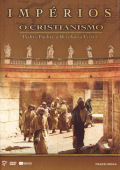

|

"Empires Peter & Paul and the Christian Revolution" (2002 - 110m)
SINOPSE
O CRISTIANISMO
PEDRO, PAULO E A REVOLUÇÃO CRISTÃ
Há dois mil anos, na província romana da Judeia, Jesus foi crucificado pela tropas imperiais. Milhares de pessoas antes dele sofreram o mesmo destino. Mas ao contrário dos seus antepassados na cruz, Jesus ficou para a História.
A sua memória manteve-se viva graças a uns poucos judeus - homens e mulheres que se convenceram rapidamente que Jesus era o Messias... que Jesus tinha sido ungido por Deus para anunciar o seu Reino na Terra. Contra todas as expectativas, e perante a hostilidade e a indiferença, estes pobres súbditos de Roma lograram pregar as novas sobre Jesus fora da Judeia e por todo o Império Romano. Consegiram implantar um movimento que um dia conquistaria a própria Roma. Eles eram Barnabé e Priscila, Jaime, Estevão, Tito. Os mais famosos foram Pedro e Paulo. Se um foi "a Pedra" sobre a qual se fundou a Igreja, o outro foi um rio, inundando as margens para alcançar todas as regiões e povos.
Combinando texto de Paulo, Lucas e outros escritores antigos com dramatizações de períodos da História, filmado em cenários naturais do Mediterrâneo, O CRISTIANISMO é a história da revolução que mudou o mundo.
DISCO 1 - A PEDRA E O RIO
Com o seu Messias executado, os sonhos desvanecidos e a sua causa considerada subversiva pelo império mais poderoso que o mundo jamais vira, os seguidores de Jesus enfrentavam um futuro sombrio. O seu movimento parecia estar destinado à extinção. Apesar de tudo, e incrivelmente, os sobreviventes de Jesus transformaram a derrota em vitória, a devastação em júbilo. Pelo que se diz, tudo aconteceu nas margens do Mar de galileu, onde Simão, Pedro e outros imaginaram a ascensão de Jesus. Reforçado com esperança e determinação, Pedro tornou-se uma figura indomável, que uniria o seu grupo numa forte comunidade de fervorosos crentes. No entanto, aproximavam-se dias negros, dias de perseguições, encarceramento e dispersões. Quando esses dias chegaram, Pedro encontrou apoio numa fonte inesperada. O seu nome era Paulo.
DISCO 2 - O IMPÉRIO E O REINO
O movimento de Jesus, pregado fora da Judeia por apóstolos como Pedro e Paulo, ganhou rapidamente popularidade entre judeus e não judeus de todo o Império Romano. Apesar de estarem presentes os desafios de ideias distintas dentro do mesmo movimento. Deveriam os não judeus converter-se ao judaísmo? Deveriam ser circuncisados? Paulo, convencido de que não havia tempo para grandes discussões, incorreu num duro confronto com alguns dos seguidores mais antigos de Jesus. Parece que Pedro tentou mediar o conflito. "A Pedra" transformou-se num elo de ligação entre os vários grupos e ajudou a manter o movimento unido. Mas não foi possível manter o equilíbrio durante muito tempo. Paulo empreendeu um caminho a sós, fundando igrejas por todo o Mediterrâneo e escrevendo cartas que mais tarde seriam fundamentais para a posterior teologia cristã.
REALIZADORES
Douglas Cheek, Michael Chin, Margaret Koval.
|
VIDEO
Standard 1.33:1 [4:3]
AUDIO
Português Dolby Digital 2.0
Inglês Dolby Digital 2.0
LEGENDAS
Português
OPÇÕES ESPECIAIS
Selecção de Capítulos
DISCOS/LADOS
2 discos de 1 lado
ESTÚDIO(S)
Koval Films, LLC
Track Media
DISTRIBUIÇÃO
Prisvideo, SA
|